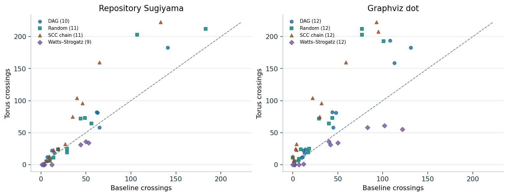
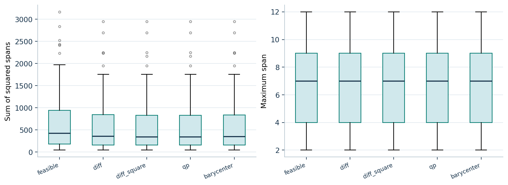
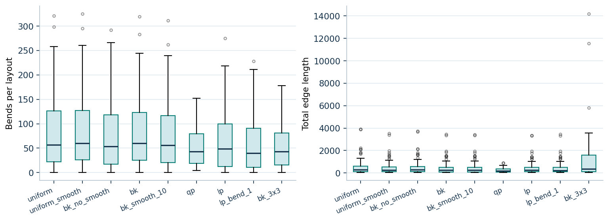
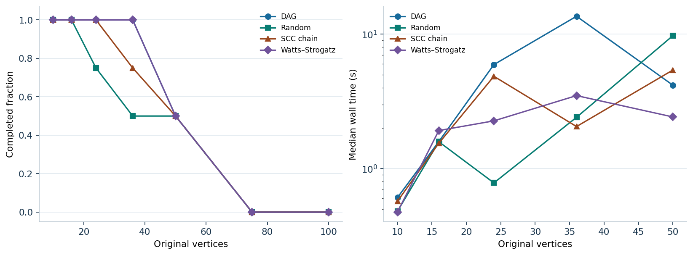
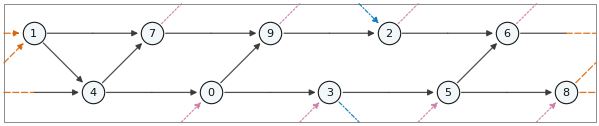
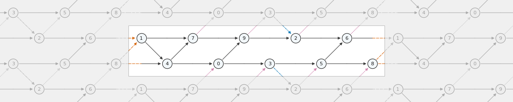
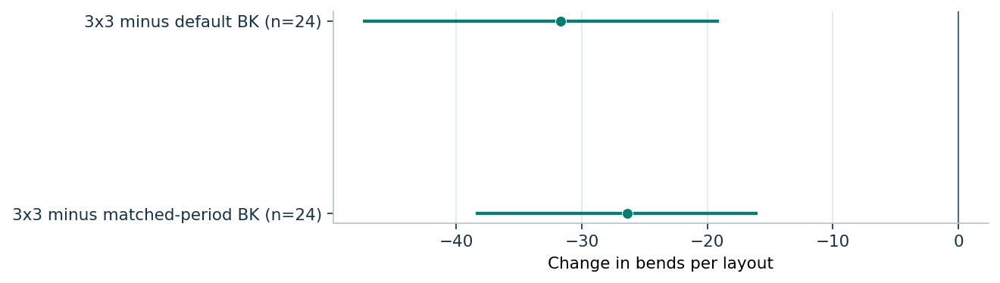

評価の要約
トーラスの利点は、全体の交差数よりも、階層進行方向の維持と、循環方向が揃ったグラフに現れた。統制生成の平面杉山法との対応41組では逆行辺が平均5.32本減った。交差は平均13.54増え、Graphviz dotとの48組でも平均25.48増えた。一方、Watts–Strogatzでは平面杉山法と比較できた9組すべて、dotとの12組中11組で交差が減った。
固定入力で最も明瞭だったのは切れ目DPの効果。厳密列挙と40/40件で一致し、層内方向の境界を通る線分数を、交差を保ったまま減らせた。現行のUNWIND併用に悪化例があったため、UNWINDなしのDPも候補に残す追加実験を行った。
座標割当には辺長と曲がりのトレードオフがあった。周期平滑化は辺長を短縮した一方、曲がりは増える傾向だった。LPは同じ周期で比較的安定した。3×3 BKの曲がり改善は周期を揃えても残ったが、通常設定では周期が拡大する。
1. フレームワーク全体
同じ有向グラフを各方式で描き、出来上がった辺の中心線を共通の測定器で数えた。円筒対照では層内方向の巻き数を 0 に固定した。UNWIND・DP なしの条件は境界処理の追加効果を調べるためのもの。平面・放射型の閉路除去で反転した辺は描画時に元の向きに戻るが、階層方向には逆行する。

統制生成グラフ
| 方式 | 完了 / 試行 | 制限付き完了 | 幾何交差 | 重なり辺対 | 逆行辺 | 境界を通る元辺 | 曲がり | 正規化総辺長 | 時間 (s) |
|---|---|---|---|---|---|---|---|---|---|
| トーラス | 48/48 | 4 | 31.50 | 0.00 | 0.00 | 9.50 | 48.50 | 12.59 | 0.45 |
| 平面杉山 | 41/48 | 0 | 19 | 1 | 5 | 0 | 24 | 10.11 | 0.90 |
| 放射型 | 28/48 | 0 | 7.50 | 1.50 | 4.00 | 0.00 | — | 11.74 | 1.39 |
| Graphviz dot | 48/48 | 0 | 20.00 | 0.00 | 5.00 | 0.00 | 77.00 | 11.83 | 0.09 |
| 円筒対照 | 48/48 | 4 | 52.00 | 0.00 | 0.00 | 4.50 | 53.50 | 11.67 | 0.38 |
| UNWIND・DP なし | 48/48 | 4 | 31.50 | 0.00 | 0.00 | 13.00 | 50.50 | 14.20 | 0.44 |
| 差の定義（左 − 右） | 対応数 | 平均差 | 中央値 | 平均差 95%区間 | 減 / 同 / 増 |
|---|---|---|---|---|---|
| トーラス − 平面杉山／統制生成 | 41 | 13.54 | 4 | [5.34, 23.76] | 17 / 1 / 23 |
| トーラス − 放射型／統制生成 | 28 | 13.32 | 6.00 | [6.54, 21.18] | 7 / 1 / 20 |
| トーラス − Graphviz dot／統制生成 | 48 | 25.48 | 10.50 | [13, 38.52] | 11 / 2 / 35 |
| トーラス − 円筒対照／統制生成 | 48 | -22 | -15.50 | [-29.35, -15.71] | 46 / 2 / 0 |
| トーラス − UNWIND・DP なし／統制生成 | 48 | 0 | 0.00 | [0, 0] | 0 / 48 / 0 |
| 差の定義（左 − 右） | 対応数 | 平均差 | 中央値 | 平均差 95%区間 | 減 / 同 / 増 |
|---|---|---|---|---|---|
| DAG／平面杉山 | 10 | 9.60 | 5.00 | [2.10, 18.50] | 2 / 0 / 8 |
| DAG／Graphviz dot | 12 | 24.58 | 11.50 | [11.50, 39.75] | 0 / 1 / 11 |
| Random／平面杉山 | 11 | 15.55 | 5 | [1.36, 34.55] | 5 / 0 / 6 |
| Random／Graphviz dot | 12 | 40.75 | 19.50 | [16.33, 67.67] | 0 / 0 / 12 |
| SCC chain／平面杉山 | 11 | 32.64 | 9 | [12.27, 54.18] | 1 / 1 / 9 |
| SCC chain／Graphviz dot | 12 | 52.25 | 36.50 | [29.50, 76.67] | 0 / 0 / 12 |
| Watts–Strogatz／平面杉山 | 9 | -7.89 | -4 | [-12.11, -4] | 9 / 0 / 0 |
| Watts–Strogatz／Graphviz dot | 12 | -15.67 | -9.00 | [-27.50, -6.33] | 11 / 1 / 0 |
公開グラフの小標本
研究者の公開ミラーに収録された AT&T / North、Rome、RandDAG から、取得できた 10・12・16・20・24 頂点の候補を各サイズ最大 2 件ずつ測定した。掲載リストから SHA 順に抽出した探索的標本で、全コレクションの代表性は評価していない。旧形式の方向指定はコレクションの属性から補った。Rome は各辺を固定 seed で有向化した。データミラー · 元ファイル URL と Git blob SHA
| 方式 | 完了 / 試行 | 制限付き完了 | 幾何交差 | 重なり辺対 | 逆行辺 | 境界を通る元辺 | 曲がり | 正規化総辺長 | 時間 (s) |
|---|---|---|---|---|---|---|---|---|---|
| トーラス | 29/29 | 0 | 3 | 0 | 0 | 4 | 16 | 4.57 | 0.10 |
| 平面杉山 | 29/29 | 0 | 3 | 0 | 0 | 0 | 10 | 6.38 | 0.11 |
| 放射型 | 28/29 | 0 | 2.50 | 0.00 | 0.00 | 0.00 | — | 9.82 | 0.82 |
| Graphviz dot | 29/29 | 0 | 1 | 0 | 0 | 0 | 22 | 5.30 | 0.08 |
| 円筒対照 | 29/29 | 0 | 5 | 0 | 0 | 0 | 19 | 4.53 | 0.09 |
| UNWIND・DP なし | 29/29 | 0 | 3 | 0 | 0 | 5 | 17 | 4.57 | 0.10 |
| 差の定義（左 − 右） | 対応数 | 平均差 | 中央値 | 平均差 95%区間 | 減 / 同 / 増 |
|---|---|---|---|---|---|
| トーラス − 平面杉山／公開標本 | 29 | 0.52 | -1 | [-1.14, 3.03] | 16 / 6 / 7 |
| トーラス − 放射型／公開標本 | 28 | 0.32 | 0.00 | [-1.32, 1.93] | 10 / 6 / 12 |
| トーラス − Graphviz dot／公開標本 | 29 | 3.90 | 1 | [1.52, 7.86] | 1 / 9 / 19 |
| トーラス − 円筒対照／公開標本 | 29 | -4.52 | -4 | [-6.17, -3.07] | 22 / 7 / 0 |
| トーラス − UNWIND・DP なし／公開標本 | 29 | 0 | 0 | [0, 0] | 0 / 29 / 0 |
| 差の定義（左 − 右） | 対応数 | 平均差 | 中央値 | 平均差 95%区間 | 減 / 同 / 増 |
|---|---|---|---|---|---|
| AT&T / North／平面杉山 | 10 | 2.90 | 1.00 | [-1.20, 9.20] | 4 / 1 / 5 |
| AT&T / North／Graphviz dot | 10 | 7.10 | 1.50 | [1.20, 17] | 0 / 3 / 7 |
| Rome（有向化）／平面杉山 | 9 | -1.56 | -1 | [-2.78, -0.67] | 7 / 2 / 0 |
| Rome（有向化）／Graphviz dot | 9 | 1.22 | 0 | [-0.11, 3.33] | 1 / 4 / 4 |
| RandDAG／平面杉山 | 10 | 0 | -0.50 | [-1.50, 1.90] | 5 / 3 / 2 |
| RandDAG／Graphviz dot | 10 | 3.10 | 2.50 | [1.60, 4.90] | 0 / 2 / 8 |
結果の評価
平面杉山法と対応した41組では、交差は17組で減り、23組で増え、1組で同じだった。重なり辺対は平均2.93組減った一方、境界を通る元辺は平均10.63本増えた。逆行をなくす利点と、辺を追う際に境界を行き来する負担が同時に現れる。
層内の巻き数を0に固定した円筒対照との48組では、交差が46組で減り、残り2組は同数だった。平均差は−22.00、境界を通る元辺は平均7.44本増えた。二方向の周期を使えることの効果は内部対照で確認できる。平面・放射・dotに対する一律の優位までは支持されなかった。
公開標本29件はいずれも、Romeの有向化後を含め、実測では非巡回だった。平面杉山法より交差が減った例は16件あったが、平均差は＋0.52、dotとの平均差は＋3.90だった。本標本が確かめるのは、小さな非巡回入力での副次的な挙動。循環グラフ全般への外挿にはより広い公開データが必要になる。
初回の長めの予備実行では放射型で多数の時間切れが発生した。全体の主比較は10・16頂点を均等に含む48入力、各方式のworker上限14秒に切り替えた。放射型では20件、平面杉山法では7件の時間切れ。トーラスとdotは48/48件完了した。時間切れの多い方式の品質差は完走した入力に限られる。
2. 階層数探索と分配
二分探索はまず左右境界を通る元辺の目標数を定め、それを達成する最小層数を探す。固定案には ceil(√(2n)) 層を与えた。分配の比較では同じ層数と通過辺数を固定し、追加最適化なし、総和、二乗和、QP、重心法を比較した。固定案で解が得られなかった入力は試行数に残し、完成図の対応差からは外した。

| 方式 | 完了 / 試行 | 制限付き完了 | 層数 | 左右通過辺 | 求解回数 | 時間 (s) |
|---|---|---|---|---|---|---|
| binary | 72/72 | 8 | 9.00 | 4.50 | 5.00 | 0.06 |
| fixed_sqrt | 64/72 | 8 | 6.00 | 8.00 | 1.00 | 0.03 |
| 方式 | 完了 / 試行 | 制限付き完了 | 総スパン | 二乗和 | 最大スパン | 予測ダミー数 | 時間 (s) |
|---|---|---|---|---|---|---|---|
| feasible | 72/72 | 8 | 112.50 | 425.50 | 7.00 | 69.00 | 0.01 |
| diff | 72/72 | 8 | 105.00 | 362.50 | 7.00 | 64.00 | 0.01 |
| diff_square | 72/72 | 9 | 106.50 | 346.50 | 7.00 | 64.00 | 0.01 |
| qp | 72/72 | 8 | 107.00 | 346.50 | 7.00 | 64.00 | 0.02 |
| barycenter | 72/72 | 8 | 105.00 | 354.50 | 7.00 | 64.00 | 0.01 |
| 方式 | 完了 / 試行 | 制限付き完了 | 層数 | 左右通過辺 | 総スパン | 探索＋分配時間 (s) |
|---|---|---|---|---|---|---|
| default | 72/72 | 9 | 9.00 | 4.50 | 106.50 | 0.09 |
| fixed_sqrt | 59/64 | 10 | 6 | 8 | 86 | 0.18 |
| double_layers | 71/71 | 8 | 16 | 4 | 127 | 0.10 |
| 差の定義（左 − 右） | 対応数 | 平均差 | 中央値 | 平均差 95%区間 | 減 / 同 / 増 |
|---|---|---|---|---|---|
| 二分探索 − 固定層数／左右通過辺 | 64 | -5.03 | -3.50 | [-6.52, -3.70] | 51 / 13 / 0 |
| 二分探索 − 固定層数／層数 | 64 | 4.36 | 3.00 | [3.23, 5.55] | 9 / 4 / 51 |
| 二乗和 − 総和／スパン二乗和 | 72 | -4.29 | 0.00 | [-7.42, -1.82] | 24 / 48 / 0 |
| 二乗和 − 総和／総スパン | 72 | 0.40 | 0.00 | [0.19, 0.65] | 0 / 58 / 14 |
| 二乗和 − 総和／最長スパン | 72 | -0.06 | 0.00 | [-0.11, -0.01] | 4 / 68 / 0 |
| 二乗和 − 総和／完成図の交差 | 72 | 0.12 | 0.00 | [-2.06, 1.83] | 14 / 45 / 13 |
| 既定 − 固定層数／完成図の交差 | 58 | -21.52 | -6.50 | [-31.40, -11.84] | 41 / 7 / 10 |
| 2 倍層数 − 既定／完成図の交差 | 71 | -0.30 | 0 | [-3.20, 3.18] | 17 / 44 / 10 |
結果の評価
二分探索は固定層数案との64組中51組で左右通過辺を減らし、平均で5.03本少なかった。層数は平均4.36増えた。固定案は8件でGurobiが実行不能を返しており、通過辺数と層の少なさの両方を優先すると解けない入力がある。
二乗和を目的にした方式は総和方式との72組でスパン二乗和を平均4.29減らした。最大スパンが縮んだのは4組で、総スパンは14組で増加。完成図の交差差は平均＋0.13で、両改善方向が混在した。長辺の分布を調整する目的は支持されるが、最終交差の低下は分配目的だけでは説明できない。
固定案の完成図を評価できた58組では、既定割当の交差が平均21.52少なかった。2倍層数の条件との71組では平均差が0.30で、層の追加そのものには一貫した優位がなかった。
固定層数案の後段では、二乗和分配が2秒上限までに実行可能解を見つけず、解の読み出しで5件の例外が発生した。固定層数探索での実行不能8件や後段のworker時間切れ1件とは原因が異なる。
3. ダミー頂点の挿入
階層割当を固定し、各辺の端点が属する階層を全探索する旧法と、頂点→階層の索引を使う現行法を比較した。同じ入力層の比較では頂点列・辺列・層・巻きフラグ・重みの完全一致を調べた。各元辺の経路が連続し、分割後の各線分が階層方向に一つ進むことも検査した。
| 方式 | 検査数 | 旧出力と完全一致 | Σ(s−1) と一致 | 単位スパン違反ケース | ダミー数の中央値 |
|---|---|---|---|---|---|
| current_lookup | 72 | 72 | 72 | 0 | 64.00 |
| explicit_empty_layers | 72 | 72 | 72 | 0 | 64.00 |
| 差の定義（左 − 右） | 対応数 | 平均差 | 中央値 | 平均差 95%区間 | 減 / 同 / 増 |
|---|---|---|---|---|---|
| current_lookup − legacy_lookup／時間 (s) | 72 | -0.00 | -0.00 | [-0.00, 0.00] | 62 / 0 / 10 |
| explicit_empty_layers − current_lookup／時間 (s) | 72 | 0.00 | -0.00 | [0.00, 0.00] | 41 / 1 / 30 |
結果の評価
現行の索引化は72/72件で旧実装と同一の出力を返した。分割数の式と単位スパンも全件で一致した。この入力では明示的に空層を入れた条件も同じ結果だった。絶対時間差は小さく、併走負荷もあるため処理速度は傾向として読む。
4. 交差削減と境界処理
分割グラフを固定し、円形重心で初期化し、同じ入力から sifting の有無・回数・guard・巻き数の自由度を変更した。次に回転、層間の共通巻きを引く UNWIND、上下境界を通る線分の本数を最小化する切れ目 DP を比較した。回転の角度変位は一周を 1 とし、上下通過線分と幾何交差は個別に測った。
| 差の定義（左 − 右） | 対応数 | 平均差 | 中央値 | 平均差 95%区間 | 減 / 同 / 増 |
|---|---|---|---|---|---|
| Circular barycenter | 72 | -141.19 | -78.50 | [-181.38, -104.12] | 70 / 2 / 0 |
| Barycenter + same sifting | 72 | -6.49 | -1.00 | [-12.99, -1.29] | 38 / 11 / 23 |
| Guarded sifting | 72 | -9.86 | -1.00 | [-15.07, -5.53] | 42 / 30 / 0 |
| Guard effect | 72 | -6.61 | -1.00 | [-11.53, -3.19] | 37 / 35 / 0 |
| Variable winding | 72 | -7.03 | 0.00 | [-11.78, -3.25] | 32 / 21 / 19 |

| 差の定義（左 − 右） | 対応数 | 平均差 | 中央値 | 平均差 95%区間 | 減 / 同 / 増 |
|---|---|---|---|---|---|
| Rotation | 72 | -2.51 | 2.00 | [-6.06, 0.50] | 24 / 5 / 43 |
| Unwind | 72 | 14.43 | 3.00 | [8.60, 21.60] | 13 / 22 / 37 |
| Greedy cut | 72 | -2.06 | -2.00 | [-2.60, -1.56] | 44 / 28 / 0 |
| DP cut | 72 | -6.96 | -6.00 | [-8.14, -5.86] | 69 / 3 / 0 |
| Early and late vs. early | 72 | -6.29 | -2.00 | [-8.71, -4.14] | 39 / 33 / 0 |
| Unwind + DP | 72 | -5.96 | -5.00 | [-7.82, -4.07] | 61 / 5 / 6 |
| 方式 | 完了 / 試行 | 制限付き完了 | 幾何交差 | 上下通過線分 | 上下通過元辺 | 総辺長 | 時間 (s) |
|---|---|---|---|---|---|---|---|
| unwind_0_dp_0 | 72/72 | 9 | 57.00 | 15.00 | 12.00 | 255.64 | 0.51 |
| unwind_1_dp_0 | 72/72 | 9 | 57.00 | 20.00 | 18.00 | 312.48 | 0.47 |
| unwind_0_dp_1 | 72/72 | 9 | 57.00 | 10.00 | 10.00 | 258.39 | 0.49 |
| unwind_1_dp_1 | 72/72 | 9 | 57.00 | 8.50 | 8.50 | 243.81 | 0.49 |
| 差の定義（左 − 右） | 対応数 | 平均差 | 中央値 | 平均差 95%区間 | 減 / 同 / 増 |
|---|---|---|---|---|---|
| 幾何交差 | 72 | 0 | 0.00 | [0, 0] | 0 / 72 / 0 |
| 上下通過元辺 | 72 | -3.51 | -4.00 | [-5.14, -1.83] | 58 / 3 / 11 |
| 総辺長 | 72 | 2.31 | -0.54 | [-93.92, 116.64] | 42 / 2 / 28 |
| 工程時間 (s) | 72 | -0.02 | 0.00 | [-0.08, 0.03] | 23 / 0 / 49 |
| 差の定義（左 − 右） | 対応数 | 平均差 | 中央値 | 平均差 95%区間 | 減 / 同 / 増 |
|---|---|---|---|---|---|
| DP だけ − 両方なし | 72 | -6.96 | -6.00 | [-8.14, -5.86] | 69 / 3 / 0 |
| UNWIND だけ − 両方なし | 72 | 14.43 | 3.00 | [8.60, 21.60] | 13 / 22 / 37 |
| 両方あり − DP だけ | 72 | 1 | 0.00 | [-0.65, 2.83] | 30 / 21 / 21 |
初期化・sifting・回転・UNWIND・DPの全条件
| 方式 | 完了 / 試行 | 制限付き完了 | 工程内交差 | 内部線分交差 | 角度変位の総和 | 上下通過線分 | 時間 (s) |
|---|---|---|---|---|---|---|---|
| input_order | 72/72 | 9 | 150.00 | 0.00 | 20.46 | 27.00 | 0.00 |
| circular_barycenter | 72/72 | 9 | 59.50 | 0.00 | 15.08 | 10.00 | 0.00 |
| 方式 | 完了 / 試行 | 制限付き完了 | 工程内交差 | 内部線分交差 | 角度変位の総和 | 上下通過線分 | 時間 (s) |
|---|---|---|---|---|---|---|---|
| no_sifting | 72/72 | 9 | 59.50 | 0.00 | 15.08 | 10.00 | 0.00 |
| rounds_1 | 72/72 | 9 | 53.50 | 0.00 | 17.03 | 12.50 | 0.10 |
| default | 72/72 | 9 | 57.00 | 0.00 | 17.03 | 13.00 | 0.49 |
| rounds_10 | 72/72 | 9 | 57.00 | 0.00 | 17.03 | 13.00 | 0.98 |
| no_guard | 72/72 | 9 | 59.50 | 0.00 | 25.66 | 18.50 | 0.43 |
| fixed_winding | 72/72 | 9 | 57.00 | 0.00 | 15.08 | 10.00 | 0.30 |
| 方式 | 完了 / 試行 | 制限付き完了 | 工程内交差 | 内部線分交差 | 角度変位の総和 | 上下通過線分 | 時間 (s) |
|---|---|---|---|---|---|---|---|
| off | 72/72 | 9 | 57.00 | 0.00 | 17.03 | 13.00 | 0.00 |
| unguarded | 72/72 | 9 | 57.00 | 0.00 | 17.37 | 15.00 | 0.00 |
| guarded | 72/72 | 9 | 57.00 | 0.00 | 17.37 | 15.00 | 0.00 |
| 方式 | 完了 / 試行 | 制限付き完了 | 工程内交差 | 内部線分交差 | 角度変位の総和 | 上下通過線分 | 時間 (s) |
|---|---|---|---|---|---|---|---|
| off | 72/72 | 9 | 57.00 | 0.00 | 17.37 | 15.00 | 0.00 |
| inner_only | 72/72 | 9 | 57.00 | 0.00 | 20.66 | 21.00 | 0.00 |
| full | 72/72 | 9 | 57.00 | 0.00 | 20.66 | 20.00 | 0.00 |
| 方式 | 完了 / 試行 | 制限付き完了 | 工程内交差 | 内部線分交差 | 角度変位の総和 | 上下通過線分 | 時間 (s) |
|---|---|---|---|---|---|---|---|
| off | 72/72 | 9 | 57.00 | 0.00 | 17.37 | 15.00 | 0.00 |
| greedy | 72/72 | 9 | 57.00 | 0.00 | 16.98 | 12.50 | 0.00 |
| dp | 72/72 | 9 | 57.00 | 0.00 | 17.95 | 10.00 | 0.00 |
結果の評価
円形重心初期化は初期交差数を平均141.19減らし、70/72組で改善。同じsiftingをその後に適用すると差は平均−6.49まで縮まった。既定siftingは初期化のみからさらに平均9.86減らし、guardを外した条件より37組で交差が少なかった。5回から10回に増やしても72組の交差数は変わらなかった。巻き数を更新できる条件は固定条件より改善した組と悪化した組の両方があり、探索経路への依存が残る。
guard付き回転で角度変位の総和は平均2.995周分減ったが、21組では増加した。切れ目DPは貪欲案より66/72組で上下通過線分を減らした。DPだけなら無処理比で69組減少、3組同数、平均−6.96本。UNWINDとDPを併用した既定処理は61組で減少する一方、6組で増加し、平均−5.96本にとどまった。幾何交差は72組全てで同じだった。
UNWINDを先に適用すると巻き数の候補集合が変わる。DP単体を比較対象にしたときも、併用で通過線分が増えた入力が21件あった。この理由から、DPだけの候補を残す対照を別途実行した。
5. 座標の割当と内部処理
層、層内順序、巻き数を固定した。辺長と曲がりは周期境界で図を切る前の折れ線から求めた。3×3 BK は隣接タイルを含めて配置し、中央タイルの座標と必要な周期を取り出す。中央から出発して 3×3 範囲外に抜けるためにコピー計算から落ちた線分があったのは 12/72 件。既定 BK と 3×3 BK の周期差を調べるため、後述の同一周期の追加比較も実施した。

| 方式 | 完了 / 試行 | 制限付き完了 | 総辺長 | 曲がり | 整列内部線分 | 周期 | 間隔違反 | 時間 (s) |
|---|---|---|---|---|---|---|---|---|
| uniform | 72/72 | 9 | 287.40 | 57.00 | 6.00 | 14.00 | 0.00 | 0.00 |
| uniform_smooth | 72/72 | 9 | 247.19 | 60.00 | 2.00 | 14.00 | 0.00 | 0.00 |
| bk_no_smooth | 72/72 | 9 | 275.90 | 53.50 | 15.50 | 14.00 | 0.00 | 0.00 |
| bk | 72/72 | 9 | 243.81 | 60.00 | 4.00 | 14.00 | 0.00 | 0.00 |
| bk_smooth_10 | 72/72 | 9 | 240.52 | 56.00 | 4.00 | 14.00 | 0.00 | 0.00 |
| qp | 60/72 | 7 | 174.07 | 43.00 | 0.00 | 10.50 | 0.00 | 0.01 |
| lp | 72/72 | 9 | 243.25 | 48.50 | 19.00 | 14.00 | 0.00 | 0.01 |
| lp_bend_1 | 72/72 | 9 | 239.51 | 39.50 | 10.50 | 14.00 | 0.00 | 0.01 |
| bk_3x3 | 72/72 | 9 | 371.75 | 43.50 | 33.50 | 30.75 | 0.00 | 0.05 |
| 差の定義（左 − 右） | 対応数 | 平均差 | 中央値 | 平均差 95%区間 | 減 / 同 / 増 |
|---|---|---|---|---|---|
| 周期平滑化／総辺長 | 72 | -56.49 | -29.40 | [-76.83, -38.66] | 70 / 2 / 0 |
| 周期平滑化／曲がり | 72 | 9.43 | 6.00 | [7.25, 11.88] | 5 / 5 / 62 |
| 周期平滑化／整列内部線分 | 72 | -18.06 | -10.00 | [-22.99, -13.58] | 63 / 9 / 0 |
| LP − 既定 BK／総辺長 | 72 | -12.92 | -2.88 | [-19.22, -7.40] | 47 / 2 / 23 |
| LP − 既定 BK／曲がり | 72 | -17.90 | -11.00 | [-21.78, -14.35] | 69 / 2 / 1 |
| 曲がりペナルティ付き LP − LP／曲がり | 72 | -8.15 | -6.50 | [-10.28, -6.26] | 60 / 8 / 4 |
| 3×3 BK − 既定 BK／曲がり | 72 | -31.90 | -19.00 | [-40.81, -23.96] | 65 / 6 / 1 |
| 3×3 BK − 既定 BK／周期 | 72 | 27.19 | 14.75 | [20.57, 34.56] | 0 / 2 / 70 |
射影を外した対照では 61/72 件で領域または順序に違反した。比較のために意図的に外した条件の結果である。
単方向BK・競合マーク・整列・圧縮・射影の全条件
| 方式 | 完了 / 試行 | 制限付き完了 | 順序違反 | 最小間隔違反 | 周期領域外 | 曲がり | 時間 (s) |
|---|---|---|---|---|---|---|---|
| direction_0 | 72/72 | 9 | 0.00 | 0.00 | 0.00 | 51.50 | 0.00 |
| direction_1 | 72/72 | 9 | 0.00 | 0.00 | 0.00 | 53.00 | 0.00 |
| direction_2 | 72/72 | 9 | 0.00 | 0.00 | 0.00 | 53.00 | 0.00 |
| direction_3 | 72/72 | 9 | 0.00 | 0.00 | 0.00 | 51.50 | 0.00 |
| median | 72/72 | 9 | 0.00 | 0.00 | 0.00 | 53.50 | 0.00 |
| 方式 | 完了 / 試行 | 制限付き完了 | 順序違反 | 最小間隔違反 | 周期領域外 | 曲がり | 時間 (s) |
|---|---|---|---|---|---|---|---|
| off | 11/72 | 0 | 0 | 0 | 0 | — | 0.00 |
| on | 72/72 | 9 | 0.00 | 0.00 | 0.00 | — | 0.00 |
| 方式 | 完了 / 試行 | 制限付き完了 | 順序違反 | 最小間隔違反 | 周期領域外 | 曲がり | 時間 (s) |
|---|---|---|---|---|---|---|---|
| all | 72/72 | 9 | 0.00 | 0.00 | 0.00 | 53.50 | 0.00 |
| no_conflict_marking | 72/72 | 9 | 0.00 | 0.00 | 0.00 | 52.00 | 0.00 |
| no_alignment | 72/72 | 9 | 0.00 | 0.00 | 0.00 | 57.00 | 0.00 |
| equal_spacing_instead_of_compaction | 72/72 | 9 | 0.00 | 0.00 | 0.00 | 57.00 | 0.00 |
結果の評価
平滑化4回は72組中70組で総辺長を減らし、平均差は−56.49。曲がりは62組で増え、平均差は＋9.43。内部線分の直線化と総辺長の改善は同じ方向に進まなかった。10回と4回の差は比較的小さく、追加反復で全例が改善する挙動ではない。
同じ周期のLPでは既定BKより曲がりが69/72組で減り、総辺長が47/72組で短くなった。曲がりペナルティ付きLPは無印LPからさらに曲がりを平均8.15減らしたが、総辺長の平均差は＋0.50。QPは成功した60件中58件で総辺長が短くなったが、試行全体では12件の求解エラーを記録した。
内部処理を外す対照では、整列の削除と圧縮の等間隔化のどちらも曲がりが平均8.90増えた。この2対照は同じ結果を生むので、それぞれの寄与を単純に足せない。競合マークを省くと全体で曲がりが平均1.85増えた。4方向統合は基準の単方向より総辺長が平均17.71短かったが、曲がりは平均0.44増えた。
6. 小規模入力での厳密照合
階層数は 1 から n まで探索して、左右通過辺数・層数の辞書式最小値と照合した。順序探索は全ての巻き数を 0 に固定し、全ての層内順序の反転数を独立に計算した。切れ目は固定循環順序上の全切れ目について目的値を計算した。
階層数の全列挙が最適または実行不能と判定できた 90 件のうち、二分探索側も判定が確定したのは 90 件。固定巻き数における sifting の最適交差数からの最大差は 4 だった。巻き数を動かせる本方式と厳密値を比べる試験では、別途その自由度を定式化する必要がある。
| 対象 | 試行 | 厳密比較可能 | 一致 | 不一致 |
|---|---|---|---|---|
| 層数／左右通過辺（辞書式） | 90 | 90 | 90 | 0 |
| 固定巻き数の順序・交差数 | 40 | 40 | 32 | 8 |
| 固定埋め込みの切れ目 DP | 40 | 40 | 40 | 0 |
| 差の定義（左 − 右） | 対応数 | 平均差 | 中央値 | 平均差 95%区間 | 減 / 同 / 増 |
|---|---|---|---|---|---|
| 求解回数 | 90 | -8.61 | -7.00 | [-9.56, -7.69] | 90 / 0 / 0 |
二分探索単独の計測行は 90 件。判定不能の候補は列挙側の厳密値に入れていない。
結果の評価
二分探索は90/90件で確定した厳密解に一致し、列挙より求解回数が平均8.61回少なかった。切れ目DPも40/40件で一致した。固定巻き数のsiftingは32/40件で最適値と同じ、8件で上回った。したがって、通常のsiftingには小規模であっても最適性の主張を置けない。
7. 規模、失敗、計算時間
頂点数と辺密度を振り、描画や幾何評価を除いた計算時間を測った。完走率と完走した例の時間を別々に読む。Gurobi 1 スレッドで実行したが、独立ケースは並行処理したため壁時計時間は環境と負荷の影響を含む。RSS には Python とライブラリのメモリが含まれる。

| 工程 | 件数 | 中央値 (s) | 全体に対する中央値 (%) |
|---|---|---|---|
| 階層探索 | 68 | 0.13 | 11.91 |
| 階層調整 | 68 | 0.03 | 4.66 |
| ダミー挿入 | 68 | 0.00 | 0.01 |
| 交差削減 | 68 | 1.06 | 82.44 |
| 座標割当 | 68 | 0.00 | 0.32 |
| 族 · 頂点数 | 完了 / 試行 | ソルバー制限なしの完了 | 非完走の状態 | 最後に記録したモデル (非完走) | 時間中央値 (s) | ピーク RSS 中央値 (MiB) |
|---|---|---|---|---|---|---|
| DAG · 10 | 4/4 | 4 | — | — | 0.61 | 92.34 |
| DAG · 16 | 4/4 | 4 | — | — | 1.59 | 92.29 |
| DAG · 24 | 4/4 | 3 | — | — | 5.93 | 93.66 |
| DAG · 36 | 4/4 | 4 | — | — | 13.58 | 94.23 |
| DAG · 50 | 2/4 | 2 | 実行エラー 2 | Torus_Balance_DiffSquare 2 | 4.17 | 94.41 |
| DAG · 75 | 0/4 | 0 | 実行エラー 4 | Torus_Balance_DiffSquare 4 | — | — |
| DAG · 100 | 0/4 | 0 | 実行エラー 4 | Torus_Balance_DiffSquare 4 | — | — |
| Random · 10 | 4/4 | 4 | — | — | 0.48 | 94.19 |
| Random · 16 | 4/4 | 4 | — | — | 1.58 | 96.40 |
| Random · 24 | 3/4 | 3 | 実行エラー 1 | Torus_Balance_DiffSquare 1 | 0.78 | 96.55 |
| Random · 36 | 2/4 | 1 | 実行エラー 2 | Torus_Balance_DiffSquare 2 | 2.41 | 98.52 |
| Random · 50 | 2/4 | 1 | 実行エラー 2 | Torus_Balance_DiffSquare 2 | 9.74 | 100.20 |
| Random · 75 | 0/4 | 0 | 実行エラー 4 | Torus_Balance_DiffSquare 4 | — | — |
| Random · 100 | 0/4 | 0 | 実行エラー 4 | Torus_Balance_DiffSquare 4 | — | — |
| SCC chain · 10 | 4/4 | 4 | — | — | 0.57 | 94.31 |
| SCC chain · 16 | 4/4 | 4 | — | — | 1.54 | 94.40 |
| SCC chain · 24 | 4/4 | 3 | — | — | 4.86 | 95.89 |
| SCC chain · 36 | 3/4 | 2 | worker 時間切れ 1 | — | 2.05 | 100.27 |
| SCC chain · 50 | 2/4 | 2 | 実行エラー 2 | Torus_Balance_DiffSquare 2 | 5.41 | 99.75 |
| SCC chain · 75 | 0/4 | 0 | 実行エラー 4 | Torus_Balance_DiffSquare 4 | — | — |
| SCC chain · 100 | 0/4 | 0 | 実行エラー 4 | Torus_Balance_DiffSquare 4 | — | — |
| Watts–Strogatz · 10 | 4/4 | 3 | — | — | 0.48 | 94.92 |
| Watts–Strogatz · 16 | 4/4 | 2 | — | — | 1.92 | 96.34 |
| Watts–Strogatz · 24 | 4/4 | 2 | — | — | 2.26 | 97.34 |
| Watts–Strogatz · 36 | 4/4 | 2 | — | — | 3.49 | 99.69 |
| Watts–Strogatz · 50 | 2/4 | 1 | 実行エラー 2 | Torus_Balance_DiffSquare 2 | 2.42 | 98.91 |
| Watts–Strogatz · 75 | 0/4 | 0 | 実行エラー 4 | Torus_Balance_DiffSquare 4 | — | — |
| Watts–Strogatz · 100 | 0/4 | 0 | 実行エラー 4 | Torus_Balance_DiffSquare 4 | — | — |
結果の評価
112試行中68件が完走。43件のエラーのうち、40件は二乗和の階層調整モデルで求解開始前にGurobiErrorとなった。75・100頂点の各16件全てと、50頂点の密な8件がこの分類に入る。残り3件は規模比較の1秒制限で実行可能解が見つからず、解を読み出す際にAttributeErrorとなった。これらとworker全体の時間切れ1件を区別した。ライセンス上限と実装上の時間切れ処理が結果に含まれるため、100頂点を算法自体の限界とは判断できない。
完走分の中央値は、交差削減が1.06秒、階層探索が0.13秒、座標割当が0.005秒弱。今回の入力と実装では求解に成功した後も交差削減が計算時間を支配する例が多かった。
8. 描画と周期境界の検査
固定座標の例で、境界を切った線分が周期的につながること、分割しても本来の辺長を保つこと、矢印が最後に一つだけあることを確認した。別の既知例で、交差カウンタが境界上の交差を一度だけ数え、共有端点と重なりを区別するかを検査した。
| 例 | 状態 | 線分数 | 期待線分数 | 接続切れ | 終端矢印 | 幾何交差 | 期待交差 | 重なり辺対 |
|---|---|---|---|---|---|---|---|---|
| plain | 完了 | 1 | 1 | 0 | 1 | — | — | — |
| x | 完了 | 2 | 2 | 0 | 1 | — | — | — |
| y_positive | 完了 | 2 | 2 | 0 | 1 | — | — | — |
| y_negative | 完了 | 2 | 2 | 0 | 1 | — | — | — |
| both_corner | 完了 | 2 | 2 | 0 | 1 | — | — | — |
| both_multiple | 完了 | 4 | 4 | 0 | 1 | — | — | — |
| y_negative_multiple | 完了 | 3 | 3 | 0 | 1 | — | — | — |
| dummy_intersection | 完了 | — | — | — | — | 1 | 1 | 0 |
| shared_endpoint | 完了 | — | — | — | — | 0 | 0 | 0 |
| coincident | 完了 | — | — | — | — | 0 | 0 | 1 |
| seam_crossing_once | 完了 | — | — | — | — | 1 | 1 | 0 |


| 方式 | 完了 / 試行 | 制限付き完了 | Figure 構築 (s) | 保存・合成 (s) | 幅 (px) | 高さ (px) | サイズ (byte) |
|---|---|---|---|---|---|---|---|
| base | 4/4 | 0 | 0.04 | 0.14 | 476.00 | 599.00 | 33,796.00 |
| context | 4/4 | 0 | 0.04 | 0.13 | 936.00 | 1,182.00 | 91,656.50 |
結果の評価
境界分割7例と交差判定4例が期待値と一致した。上下と左右を同時にまたぐ角、上下の複数巻き、共有端点と重なりも含む。画像4組ではファイルサイズ中央値が中央のみ約34KB、周辺付き約92KB。表示情報を増やすコストを画素数と容量で確認したが、所要時間の差は4例だけなので大きな傾向は判断しない。
9. 結果を受けた追加実験
10.1 3×3 BK の改善は周期の違いでも説明できるか
通常の比較では 3×3 BK が曲がりを減らす一方で周期も変わる。そこで各族・頂点数・密度の seed 0 について、同じ層・順序・巻き数を使い、既定 BK の周期だけを 3×3 BK と同じ値に広げた。3×3 BK とこの対照の差は、共通の周期下で残る座標方式の差を示す。

| 差の定義（左 − 右） | 対応数 | 平均差 | 中央値 | 平均差 95%区間 | 減 / 同 / 増 |
|---|---|---|---|---|---|
| 3×3 − 既定 BK／period | 24 | 31.46 | 14.50 | [17.06, 48.77] | 0 / 2 / 22 |
| 3×3 − 既定 BK／bends | 24 | -31.71 | -18.50 | [-47.42, -19.08] | 20 / 3 / 1 |
| 3×3 − 既定 BK／total_edge_length | 24 | 1,072.28 | 146.29 | [342.80, 2,178.98] | 0 / 2 / 22 |
| 3×3 − 既定 BK／geometric_crossings | 24 | 0.00 | 0.00 | [0.00, 0.00] | 0 / 24 / 0 |
| 3×3 − 同一周期 BK／period | 24 | 0.00 | 0.00 | [0.00, 0.00] | 0 / 24 / 0 |
| 3×3 − 同一周期 BK／bends | 24 | -26.38 | -15.00 | [-38.46, -16.00] | 18 / 6 / 0 |
| 3×3 − 同一周期 BK／total_edge_length | 24 | -4.95 | 17.63 | [-85.06, 45.92] | 3 / 2 / 19 |
| 3×3 − 同一周期 BK／geometric_crossings | 24 | 0.00 | 0.00 | [0.00, 0.00] | 0 / 24 / 0 |
10.2 規模比較の失敗はローカル求解制限で説明できるか
線形モデルと二次目的モデルで、制限とされる変数数・制約数の直下と直上を求解した。階層・座標の数値実験が記録したモデルエラーの解釈に使う。Gurobi の公式上限
| モデル | 変数 | 線形制約 | 状態 | エラー番号 |
|---|---|---|---|---|
| linear_variables | 2,000 | 0 | 完了 | — |
| linear_variables | 2,001 | 0 | 実行エラー | 10010 |
| linear_constraints | 1 | 2,000 | 完了 | — |
| linear_constraints | 1 | 2,001 | 実行エラー | 10010 |
| quadratic_variables | 200 | 0 | 完了 | — |
| quadratic_variables | 201 | 0 | 実行エラー | 10010 |
10.3 UNWINDなしのDPを候補に残すと、悪化を避けられるか
現行処理で上下通過線分が増える入力があったため、既定の候補に加え、UNWINDなしで切れ目だけを選んだ候補も残した。回転直後の同じ配置から出発し、通過線分数の少ない方を選んだ。候補選択の変更はこの追加実験に限った。10頂点の8例で実験内の現行条件が実際のパイプライン出力と一致することも確認した。
| 差の定義（左 − 右） | 対応数 | 平均差 | 中央値 | 平均差 95%区間 | 減 / 同 / 増 |
|---|---|---|---|---|---|
| DPのみとの比較（現行処理 − DPのみ）／上下通過線分 | 24 | 1.88 | 0.00 | [-1.33, 5.88] | 9 / 10 / 5 |
| DPのみとの比較（現行処理 − DPのみ）／上下通過元辺 | 24 | 1.58 | 0.00 | [-1.42, 5.25] | 11 / 8 / 5 |
| DPのみとの比較（現行処理 − DPのみ）／幾何交差 | 24 | 0.00 | 0.00 | [0.00, 0.00] | 0 / 24 / 0 |
| DPのみとの比較（現行処理 − DPのみ）／総辺長 | 24 | 84.28 | 0.00 | [-65.27, 315.14] | 10 / 8 / 6 |
| 候補追加の効果（追加 − 現行処理）／上下通過線分 | 24 | -3.29 | 0.00 | [-6.96, -0.58] | 5 / 19 / 0 |
| 候補追加の効果（追加 − 現行処理）／上下通過元辺 | 24 | -3.04 | 0.00 | [-6.38, -0.58] | 5 / 19 / 0 |
| 候補追加の効果（追加 − 現行処理）／幾何交差 | 24 | 0.00 | 0.00 | [0.00, 0.00] | 0 / 24 / 0 |
| 候補追加の効果（追加 − 現行処理）／総辺長 | 24 | -122.46 | 0.00 | [-335.49, -5.68] | 5 / 19 / 0 |
| 境界処理なしとの比較（追加 − 無処理）／上下通過線分 | 24 | -8.08 | -6.00 | [-10.33, -6.04] | 23 / 1 / 0 |
| 境界処理なしとの比較（追加 − 無処理）／上下通過元辺 | 24 | -5.88 | -5.50 | [-7.42, -4.33] | 23 / 1 / 0 |
| 境界処理なしとの比較（追加 − 無処理）／幾何交差 | 24 | 0.00 | 0.00 | [0.00, 0.00] | 0 / 24 / 0 |
| 境界処理なしとの比較（追加 − 無処理）／総辺長 | 24 | -35.03 | -3.26 | [-81.60, -8.00] | 17 / 1 / 6 |
追加実験の生データは 周期統制・制限確認・境界候補の追加 に収録した。
結果の評価
同一周期とした24組では3×3 BKの曲がりが平均26.38減り、18組で改善、6組で同数だった。交差は全組で同じ。総辺長は平均差−4.95に対し、中央値は＋17.63で19組が増加した。3×3の曲がり低下の根拠は残るが、通常の周期・辺長を改善する根拠にはならない。
二次目的の200変数と線形の2,000変数・2,000制約は通り、それぞれ1つ超えるとエラー10010を再現した。より大きい入力を評価する場合は、フルライセンスでの再計測が必要になる。
UNWINDなしのDPを候補に加えると、既定処理比で24組中5組の上下通過線分が減り、残り19組は同じだった。平均−3.29本、最大34本改善。交差は全組で同じだった。既定候補を残して最小値を採るので、通過線分数の悪化を構造的に防げる。
実行条件と生データ
2026-11-20（日本時間）。既定の WLS 環境は Gurobi 環境生成で失敗したため、結果はローカルライセンスで取得した。Graphviz は 16.1.1、Python は 3.13.0、Gurobi は 13.0.0。大きな条件も試行できるよう、計画の生成サイズ・seed 数を今回の実行設定に絞った。
幾何交差は辺の中心線の横切り点を異なる元辺ごとに数え、重なりと接触を別にした。トーラスの基本領域上で重複を除外した。Graphviz は左から右へのポリライン指定と JSON 描画出力。放射の交差数は曲線のサンプリングに基づく。生の辺長や面積は描画方式の単位に依存する。
対応差は左側から右側を引いた値。対応数は両方の条件が完走し、同じ指標が得られた元グラフ数。平均差の bootstrap 区間はグラフ単位、2,000 反復。複数の比較を行ったため、区間は探索的な不確実性の表示として読む。制限付きの実行可能解を確認できるよう、試行表と生データにソルバー状態を残した。元の計画 · 一次資料メモ
| 実行 | 入力数 | 測定行 | 成功行 | 求解上限 (s) | worker上限 (s) | 並行ジョブ | 集計状態 |
|---|---|---|---|---|---|---|---|
| framework_timed | 48 | 288 | 261 | 2.00 | 14.00 | 4 | 完了 |
| benchmark_framework | 29 | 174 | 173 | 2.00 | 75.00 | 2 | 完了 |
| layering | 72 | 1,273 | 1,259 | 2.00 | 85.00 | 2 | 完了 |
| subdivision | 72 | 432 | 432 | 2.00 | 85.00 | 1 | 完了 |
| crossing | 72 | 1,872 | 1,872 | 2.00 | 130.00 | 2 | 完了 |
| coordinates | 72 | 1,512 | 1,439 | 2.00 | 85.00 | 1 | 完了 |
| oracles_batched | 130 | 340 | 340 | 3.00 | 40.00 | 4 | 完了 |
| scaling | 112 | 112 | 68 | 1.00 | 45.00 | 2 | 完了 |
| drawing | 5 | 23 | 23 | 3.00 | 90.00 | 1 | 完了 |
CSV・JSONL の一覧
framework_timed— 設定 · 入力 · ケース状態 · 生データ · 表形式 · 記述統計 · 対応比較benchmark_framework— 設定 · 入力 · ケース状態 · 生データ · 表形式 · 記述統計 · 対応比較 · 公開データ採否layering— 設定 · 入力 · ケース状態 · 生データ · 表形式 · 記述統計 · 対応比較subdivision— 設定 · 入力 · ケース状態 · 生データ · 表形式 · 記述統計 · 対応比較crossing— 設定 · 入力 · ケース状態 · 生データ · 表形式 · 記述統計 · 対応比較coordinates— 設定 · 入力 · ケース状態 · 生データ · 表形式 · 記述統計 · 対応比較oracles_batched— 設定 · 入力 · ケース状態 · 生データ · 表形式 · 記述統計 · 対応比較scaling— 設定 · 入力 · ケース状態 · 生データ · 表形式 · 記述統計drawing— 設定 · 入力 · ケース状態 · 生データ · 表形式 · 記述統計 · 対応比較